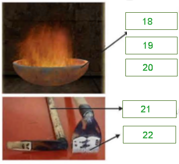

Part 1
READING PASSAGE 1
You should spend about 20 minutes on Questions 1-13, which are based on Reading Passage 1 below.

Can Scientists tell us: What happiness is?
A
Economists accept that if people describe themselves as happy, then they are happy. However, psychologists differentiate between levels of happiness. The most immediate type involves a feeling; pleasure or joy. But sometimes happiness is a judgment that life is satisfying, and does not imply an emotional state. Esteemed psychologist Martin Seligman has spearheaded an effort to study the science of happiness. The bad news is that we’re not wired to be happy. The good news is that we can do something about it. Since its origins in a Leipzig laboratory 130 years ago, psychology has had little to say about goodness and contentment. Mostly psychologists have concerned themselves with weakness and misery. There are libraries full of theories about why we get sad, worried, and angry. It hasn’t been respectable science to study what happens when lives go well. Positive experiences, such as joy, kindness, altruism and heroism, have mainly been ignored. For every 100 psychology papers dealing with anxiety or depression, only one concerns a positive trait.
B
A few pioneers in experimental psychology bucked the trend. Professor Alice Isen of Cornell University and colleagues have demonstrated how positive emotions make people think faster and more creatively. Showing how easy it is to give people an intellectual boost, Isen divided doctors making a tricky diagnosis into three groups: one received candy, one read humanistic statements about medicine, one was a control group. The doctors who had candy displayed the most creative thinking and worked more efficiently. Inspired by Isen and others, Seligman got stuck in. He raised millions of dollars of research money and funded 50 research groups involving 150 scientists across the world. Four positive psychology centres opened, decorated in cheerful colours and furnished with sofas and baby-sitters. There were get-togethers on Mexican beaches where psychologists would snorkel and eat fajitas, then form “pods” to discuss subjects such as wonder and awe. A thousand therapists were coached in the new science.
C
But critics are demanding answers to big questions. What is the point of defining levels of haziness and classifying the virtues? Aren’t these concepts vague and impossible to pin down? Can you justify spending funds to research positive states when there are problems such as famine, flood and epidemic depression to be solved? Seligman knows his work can be belittled alongside trite notions such as “the power of positive thinking”. His plan to stop the new science floating “on the waves of self- improvement fashion” is to make sure it is anchored to positive philosophy above, and to positive biology below.
D
And this takes us back to our evolutionary past Homo sapiens evolved during the Pleistocene era (1.8 m to 10,000 years ago), a time of hardship and turmoil. It was the Ice Age, and our ancestors endured long freezes as glaciers formed, then ferocious floods as the ice masses melted. We shared the planet with terrifying creatures such as mammoths, elephant-sized ground sloths and sabre-toothed cats. But by the end of the Pleistocene, all these animals were extinct. Humans, on the other hand, had evolved large brains and used their intelligence to make fire and sophisticated tools, to develop talk and social rituals. Survival in a time of adversity forged our brains into a persistent mould. Professor Seligman says: “Because our brain evolved during a time of ice, flood and famine, we have a catastrophic brain. The way the brain works is looking for what’s wrong. The problem is, that worked in the Pleistocene era. It favoured you, but it doesn’t work in the modem world”.
E
Although most people rate themselves as happy, there is a wealth of evidence to show that negative thinking is deeply ingrained in the human psyche. Experiments show that we remember failures more vividly than success. We dwell on what went badly, not what went well. Of the six universal emotions, four anger, fear, disgust and sadness are negative and only one, joy, is positive. (The sixth, surprise, is neutral). According to the psychologist Daniel Nettle, author of Happiness, and one of the Royal Institution lectures, the negative emotion each tells us “something bad has happened” and suggest a different course of action.
F
What is it about the structure of the brain that underlies our bias towards negative thinking? And is there a biology of joy? At Iowa University, neuroscientist studied what happens when people are shown pleasant and unpleasant pictures. When subjects see landscapes or dolphins playing, part of the frontal lobe of the brain becomes active. But when they are shown unpleasant images a bird covered in oil, or a dead soldier with part of his face missing the response comes from more primitive parts of the brain. The ability to feel negative emotions derives from an ancient danger-recognition system formed early in the brain’s evolution. The pre-frontal cortex, which registers happiness, is the part used for higher thinking, an area that evolved later in human history.
G
Our difficulty, according to Daniel Nettle, is that the brain systems for liking and wanting are separate. Wanting involves two ancient regions the amygdala and the nucleus accumbens that communicate using the chemical dopamine to form the brain’s reward system. They are involved in anticipating the pleasure of eating and in addiction to drugs. A rat will press a bar repeatedly， ignoring sexually available partners, to receive electrical stimulation of the “wanting” parts of the brain. But having received brain stimulation, the rat eats more but shows no sign of enjoying the food it craved. In humans, a drug like nicotine produces much craving but little pleasure.
H
In essence, what the biology lesson tells us is that negative emotions are fundamental to the human condition and it’s no wonder they are difficult to eradicate. At the same time, by a trick of nature, our brains are designed to crave but never really achieve lasting happiness.
Part 2
READING PASSAGE 2
You should spend about 20 minutes on Questions 14-27, which are based on Reading Passage 2 below.

Tattoo on Tikopia
A. There are still debates about the origins of Polynesian culture, but one thing we can ensure is that Polynesia is not a single tribe but a complex one. Polynesians which include Marquesans, Samoans, Niueans, Tongans, Cook Islanders, Hawaiians, Tahitians, and Maori, are genetically linked to indigenous peoples of parts of Southeast Asia. It’s a sub-region of Oceania, comprising of a large grouping of over 1,000 islands scattered over the central and southern Pacific Ocean, within a triangle that has New Zealand, Hawaii and Easter Island as its corners.
B. Polynesian history has fascinated the western world since Pacific cultures were first contacted by European explorers in the late 18th century. The small island of Tikopia, for many people – even for many Solomon Islanders – is so far away that it seems like a mythical land; a place like Narnia, that magical land in C. S. Lewis's classic, ‘The Chronicles of Narnia.’ Maybe because of it – Tikopia, its people, and their cultures have long fascinated scholars, travelers, and casual observers. Like the pioneers' Peter Dillion, Dumont D’Urville and John Coleridge Patterson who visit and write about the island in the 1800s, Raymond Firth is one of those people captured by the alluring attraction of Tikopia. As a result, he had made a number of trips to the island since the 1920s and recorded his experiences, observations, and reflections on Tikopia, its people, cultures and the changes that have occurred.
C. While engaged in the study of the kinship and religious life of the people of Tikopia, Firth made a few observations on their tattooing. Brief though these notes are they may be worth putting on record as an indication of the sociological setting of the practice in this primitive Polynesian community. The origin of the English word tattoo’ actually comes from the Tikopia word ‘tatau’. The word for tattoo marks, in general, is tau, and the operation of tattooing is known as ta tau, ta being the generic term for the act of striking.
D. The technique of tattooing was similar through Polynesia. Traditional tattoo artists create their indelible tattoos using pigment made from the candlenut or kukui nut. First, they burn the nut inside a bowl made of half a coconut shell. They then scrape out the soot and use a pestle to mix it with liquid. Bluing is sometimes added to counteract the reddish hue of the carbon-based pigment. It also makes the outline of the inscribed designs bolder on the dark skin of tattooing subjects.
E. For the instruments used when tattooing, specialists used a range of chisels made from albatross wing bone which were hafted onto a handle which was made from the heart wood of the bush and struck with a mallet. The tattooer began by sketching with charcoal a design on the supine subject, whose skin at that location was stretched taut by one or more apprentices. The tattooer then dipped the appropriate points – eighter a single one or a whole comb – into the ink (usually contained in a coconut-shell cup) and tapped it into the subject’s skin, holding the blade handle in one hand and tapping it with the other. The blood that usually trickled from the punctures was wiped away either by the tattooer or his apprentice, the latter having also inevitably painful – a test of fortitude that tattooers sought to shorten by working as fas as possible. In fact, tattoos nearly always festered and often led to sickness – and in some cases death.
F. In ancient Polynesian society, nearly everyone was tattooed. It was an integral part of ancient culture and was much more than a body ornament. Tattooing indicated ones' genealogy and/or rank in society. It was a sign of wealth, of strength and of the ability to endure pain. Those who went without them were seen as persons of lower social status. As such, chiefs and warriors generally had the most elaborate tattoos. Tattooing was generally begun at adolescence, and would often not be completed for a number of years. Receiving tattoos constituted an important milestone between childhood and adulthood, and was accompanied by many rites and rituals. Apart from signaling status and rank, another reason for the practice in traditional times was to make a person more attractive to the opposite sex.
G. The male facial tattoo is generally divided into eight sections of the face. The center of the forehead designated a person’s general rank. The area around the brows designated his position. The area around the eyes and the nose designated his hapu, or sub-tribe rank. The area around the temples served to details his signature. This signature was once memorized by tribal chief's who used it when buying property, signing deeds, and officiating orders. The cheek area designated the nature of the person’s work. The chin area showed the person’s mana. Lastly, the jaw area designated a person’s birth status.
H. A person’s ancestry is indicated on each side of the face. The left side is generally the father’s side, and the right side was the mother’s. the manutahi design is worked on the men’s back. It consists of two vertical lines drawn down the spine, with short vertical lines between them. When a man had the manutahi on this back, he took pride in himself. At gatherings of the people he could stand forth in their midst and display his tattoo designs with songs. And rows of triangles design on the men’s chest indicate his bravery.
I. Tattoo was a way of delivering information about its owner. It’s also a traditional method to fetch spiritual power, protection and strength. The Polynesians use this as a sign of character, position and levels in a hierarchy. Polynesian people believe that a person’s mana, their spiritual power or life force, is displayed through their tattoo.
Part 3
READING PASSAGE 3
You should spend about 20 minutes on Questions 28 – 40, which are based on Reading Passage 3 below.

Pollution! In the Bay
A
Pouring water into the sea sounds harmless enough. But in Florida Bay, a large and shallow section of the Gulf of Mexico that lies between the southern end of the Everglades and the Florida Keys, it is proving highly controversial. That is because researchers are divided over whether it will help or hinder the plants and animals that live in the bay.
B
What is at risk is the future of the bay’s extensive beds of seagrasses. These grow on the bay’s muddy floor and act as nurseries for the larvae of shrimps, lobsters and fish – many of the important sport and commercial-fishing species. Also in danger is an impressive range of coral reefs that run the length of the Florida Keys and form the third-largest barrier reef in the world. Since the 1980s, coral cover has dropped by 40%, and a third of the coral species have gone. This has had a damaging effect on the animals that depend on the reef, such as crabs, turtles and nearly 600 species of fish.
C
What is causing such ecological change is a matter of much debate. And the answer is of no small consequence. This is because the American government is planning to devote $8 billion over the next 30 years to revitalise the Everglades. Seasonal freshwater flows into the Everglades are to be restored in order to improve the region’s health. But they will then run off into the bay.
D
Joseph Zieman, a marine ecologist at the University of Virginia, thinks this is a good idea. He believes that a lack of fresh water in the bay is its main problem. The blame, he says, lies with a century of drainage in the Everglades aimed at turning the marshes into farmland and areas for development. This has caused the flow of fresh water into Florida Bay to dwindle, making the water in the bay, overall, more saline. This, he argues, kills the seagrasses, and as these rots, nutrients are released that feed the microscopic plants and animals that live in the water. This, he says, is why the bay’s once crystal-clear waters often resemble pea soup. And in a vicious circle, these turbid blooms block out sunlight, causing more seagrasses to die and yet more turbidity.
E
Brian Lapointe, a marine scientist at the Harbour Branch Oceanographic Institution at Fort Pierce in Florida, disagrees. He thinks seagrasses can tolerate much higher levels of salinity than the bay actually displays. Furthermore, he notes that when freshwater flows through the Everglades were increased experimentally in the 1990s, it led to massive plankton blooms. Freshwater running off from well-fertilised farmlands, he says, caused a fivefold rise in nitrogen levels in the bay. This was like pouring fuel on a fire. The result was mass mortality of seagrasses because of increased turbidity from the plankton. Dr Lapointe adds that, because corals thrive only in waters where nutrient levels are low, restoring freshwater rich in nitrogen will do more damage to the reef.
F
It is a plausible theory. The water flowing off crops that are grown on the750,000 acres of heavily fertilised farmland on the northern edge of the Everglades is rich in nitrogen, half of which ends up in the bay. But Bill Kruczynski, of America’s Environmental Protection Agency, is convinced that nitrogen from farmlands is not the chief problem. Some coral reefs well away from any nitrogen pollution are dying and, curiously, a few are thriving. Dr Kruczynski thinks that increased nutrients arriving from local sewage discharges from the thousands of cesspits along the Florida Keys are part of the problem.
G
Such claims and counterclaims make the impact of the restoration plan difficult to predict. If increased salinity is the main problem, the bay’s ecology will benefit from the Everglades restoration project. If, however, nitrogen is the problem, increasing the flow of freshwater could mate matters much worse.
H
If this second hypothesis proves correct, the cure is to remove nitrogen from farmland or sewage discharges, or perhaps both. Neither will be easy. Man-made wetlands, at present, being built to reduce phosphate runoff into the bay—also from fertilisers—would need an algal culture (a sort of contained algal bloom) added to them to deal with discharges from farmlands. That would be costly. So too would be the replacement of cesspits with proper sewerage—one estimate puts the cost at $650m. Either way, it is clear that when, on December 1st, 3,000 square miles of sea around the reef are designated as a “protective zone” by the deputy secretary of commerce, Sam Bodman, this will do nothing to protect the reef from pollution.
I
Some argue, though, that there is a more fundamental flaw in the plans for the bay: the very idea of returning it to a Utopian ideal before man wrought his damage. Nobody knows what Florida Bay was like before the 1950s when engineers cut the largest canals in the Everglades and took most of the water away. Dr Kruczynski suspects it was more like an estuary. The bay that many people wish to re-create could have been nothing more than a changing phase in the bay’s history.
J
These arguments do not merely threaten to create ecological problems but economic ones as well. The economy of the Florida Keys depends on tourism—the local tourist industry has an annual turnover of $2.5 billion. People come for fishing-boat trips, for manatee watching, or for scuba diving and snorkeling to view the exotically coloured corals. If the plan to restore the Everglades makes problems in the bay and the reef worse, it could prove a very expensive mistake.
Part 1
Questions 1-7
The reading Passage has seven paragraphs A-H.
Which paragraph contains the following information?
Write the correct letter A-H, in boxes 1-7 on your answer sheet.
1. An experiment involving dividing several groups one of which received positive icon
2. Review of a poorly researched psychology area
3. Contrast being made about the brains’ action as response to positive or negative stimulus
4. The skeptical attitude toward the research seemed to be a waste of fund
5. a substance that produces much wanting instead of much liking
6. a conclusion that lasting happiness is hardly obtained because of the nature of brains
7. One description that listed the human emotional categories.
Questions 8-12
Complete the following summary of the paragraphs of Reading Passage
Using NO MORE THAN FOUR WORDS from the Reading Passage for each answer.
Write your answers in boxes 8-12 on your answer sheet.
A few pioneers in experimental psychology study what happens when lives go well. Professor Alice divided doctors, making a tricky experiment, into three groups: besides the one control group, the other two either are asked to read humanistic statements about drugs or received 8 . The latter displayed the most creative thinking and worked more efficiently. Since critics are questioning the significance of the 9 for both levels of happiness and classification for the virtues. Professor Seligman countered in an evolutional theory: survival in a time of adversity forged our brains into the way of thinking for what’s wrong because we have a 10 .
There is bountiful of evidence to show that negative thinking is deeply built in the human psyche. Later, at Iowa University, neuroscientists studied the active parts in brains to contrast when people are shown pleasant and unpleasant pictures. When positive images like 11 are shown, part of the frontal lobe of the brain becomes active. But when they are shown unpleasant image, the response comes from 12 of the brain.
Question 13
Choose the correct letter, A, B, C or D.
Write your answers in boxes 13 on your answer sheet.
Part 2
Questions 14-17
Do the following statements agree with the information given in Reading Passage 1?
In boxes 14-17 on your answer sheet, write
| YES. | if the statement agrees with the views of the writer | |
| NO. | if the statement contradicts the views of the writer | |
| NOT GIVEN. | if it is impossible to say what the writer thinks about this |
14. Scientists like to do research in Tikopia because this tiny place is of great remoteness.
15. Firth was the first scholar to study on Tikopia.
16. Firth studied the culture differences on Tikopia as well as on some other islands of Pacific.
17. The English word ‘tattoo’ is evolved from the local language of the island.
Questions 18-22
Label the diagram below.
Choose NO MORE THAN TWO WORDS from Reading Passage 2 for each answer.
Write your answers on boxes 18-22 in your answer sheet.

18
19
20
21
22
Questions 23-27
Complete the notes below.
Choose NO MORE THAN TWO WORDS from the passage for each answer.
Write your answers on boxes 23-24 in your answer sheet.
Location on the body: Significance
- 23 of male face: general rank
- 24 of male face: prestige
- Female’s right side of the face: 25
Location on the body: Geometric patterns
- Male back: 26
- Male chest: 27
Part 3
Questions 28-31
The reading Passage has seven paragraphs A-J.
Which paragraph contains the following information?
Write the correct letter A-J, in boxes 28-31 on your answer sheet.
28. See grass turned to be more resistant to the saline water level in the Bay.
29. Significance of finding a specific reason in controversy
30. Expensive proposals raised to solve the nitrogen dilemma
31. A statistic of ecological changes in both the coral area and species
Questions 32-35
Use the information in the passage to match the people (listed A-C) with opinions or deeds below.
Write the appropriate letters A-C in boxes 32-35 on your answer sheet.
| A. | Bill Kruczynski | |
| B. | Brian Lapointe | |
| C. | Joseph Zieman |
32. Drainage system in everglades actually results in high salty water in the bay.
33. Restoring water high in nitrogen level will make more ecological side effect
34. High nitrogen levels may be caused by the nearby farmland.
35. Released sewage rather than nutrients from agricultural area increase the level of Nitrogen.
Questions 36-40
Do the following statements agree with the information given in Reading Passage 2
In boxes 36-40 on your answer sheet, write
| TRUE. | if the statement agrees with the information | |
| FALSE. | if the statement contradicts the information | |
| NOT GIVEN. | If there is no information on this |
36. Everyone agrees with “pouring water into the sea is harmless enough” even in the Florida Bay area.
37. Nitrogen was poured in from different types of crops as water flows through.
38. Everglade restoration project can be effective regardless of the cause of the pollution.
39. Human has changed Florida Bay where old image before 1950s is unrecalled.
40. Tourism contributes fundamentally to the Florida Bay area.